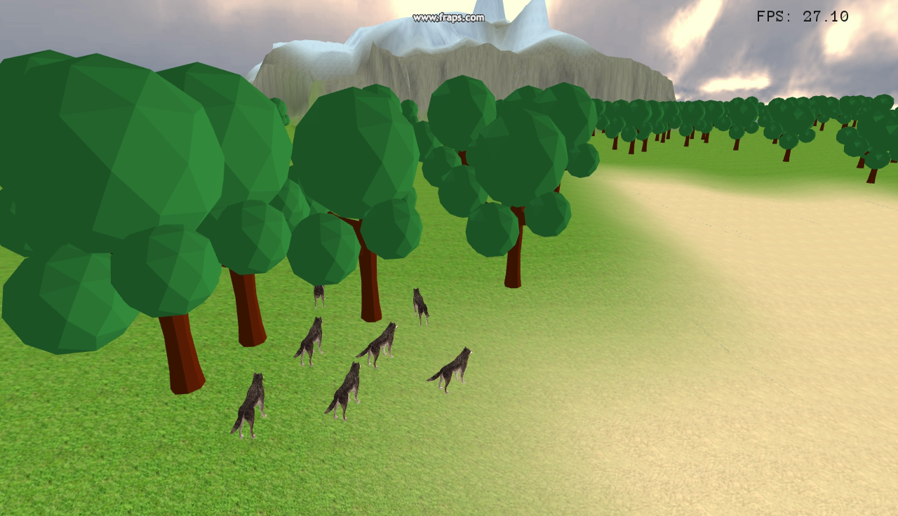
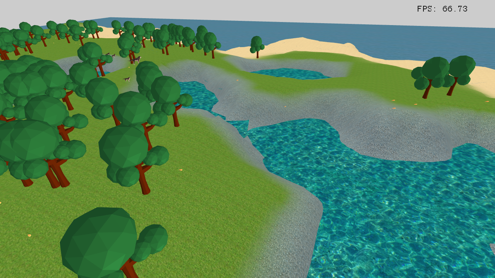
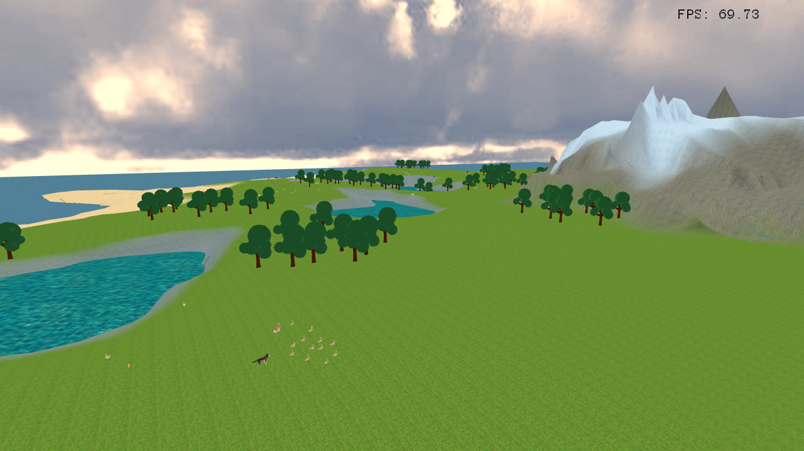

<div class="container">
  <div class="row">
    <section class="col-md-12">
      <header>
        <h1>Génération d'un écosystème - Ensimag 2<sup>ème</sup> année - 2016</h1>
        <hr>
      </header>
    </section>
    <main>
      <section class="col-md-12">
        <article>
          <section class="col-md-12">
            <h2>Membres du projet</h2>
            <ul>
              <li>Encadrants: Thomas Delame, Pierre-Luc Manteaux</li>
              <li>Étudiants: Maxence Hammen Ilyes Kacher, Mickael Ly, Mathieu Stoffel</li>
              <li>Durée: 3 semaines</li>
            </ul>
            <a href="https://ensiwiki.ensimag.fr/index.php/Projet_image_2016_:_G%C3%A9n%C3%A9ration_d'un_%C3%A9cosyst%C3%A8me">Lien vers la page ensiwiki</a>
          </section>
          <section class="col-md-12">
            <h2>Objectifs</h2>
            <p>
              Le but du projet est d’obtenir un rendu plaisant d’un écosystème dont la dynamique pourra apparaître comme réaliste aux yeux d’un observateur. Il est donc naturel de catégoriser les objectifs en deux sous-ensembles d'objectifs qui convergeront afin d'obtenir la simulation finale.
            </p>

            <h3>Création de la carte</h3>
            <p>La surface qui nous intéresse sera l’équivalent d’une île de sorte à limiter les problèmes de modélisation et de performances en taille.</p>
            <p>Le terrain généré doit être cohérent aux yeux d'un utilisateur. Dit autrement, le paysage généré de l'île doit pouvoir ressembler à un paysage réel.</p>
            <p>Cette création de terrain peut se décomposer en deux sous-tâches :</p>
            <ul>
              <li>La géographie de la carte doit apparaître comme réaliste (les plages devront jouxter la mer, il pourra y avoir des montagnes à l'intérieur de l'île...) ;</li>
              <li>Les différentes régions devront être décorées en accord avec l'environnement (des carottes ne peuvent pas apparaître au milieu de la mer...) </li>
            </ul>

            <h3>Gestion des animaux</h3>
            <p>
              Les animaux considérés seront pour ce projet des animaux “existants” dans le sens où ce sont des animaux connus (lapins, loups...) et les modèles seront prédéfinis dans des fichiers qui seront importés.
            </p>
            <p>
              La tâche la plus importante ici est de programmer l’intelligence artificielle de ces animaux. Cette intelligence doit à la fois prendre en compte les autres animaux et l’environnement de sorte à ce que les animaux puissent effectuer des tâches simples (fuite, chasse, reproduction, mort…) pour obtenir un écosystème visuellement plausible.
            </p>
          </section>
          <section class="col-md-12">
            <h2>Résultats</h2>
            <table>
              <tr><td></td></tr>
              <tr><td></td></tr>
              <tr><td></td></tr>
            </table>
          </section>
        </article>
      </section>
    </main>
  </div>
</div>
